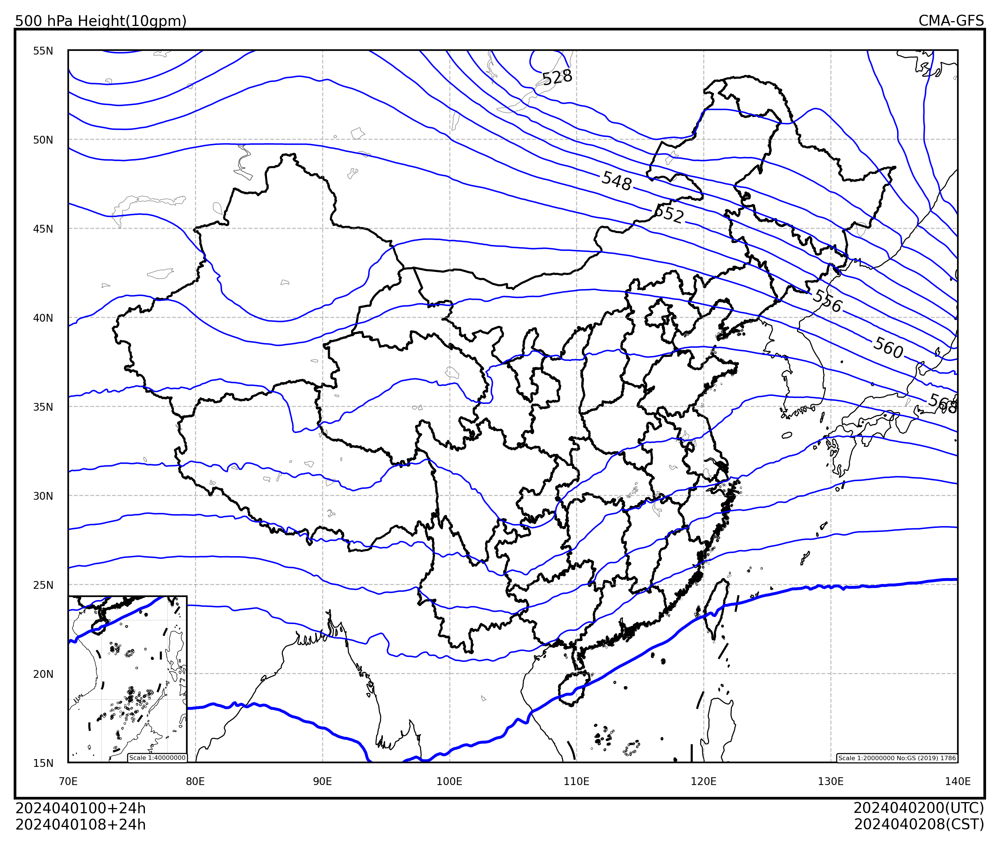

等值线#
本节介绍如何使用 cedarkit-maps 绘制 500hPa 位势高度等值线图。
首先导入需要使用的包。包括：
数据结构：numpy, pandas
cedarkit 工具套件
数据准备：reki
数据查找函数：
find_local_fileGRIB2文件要素加载函数：
load_field_from_file
气象可视化：cedarkit.maps
绘图板：
Panel底图布局：
EastAsiaMapDomain绘图样式：
ContourStyle,ContourLabelStyle
import numpy as np
import pandas as pd
from reki.data_finder import find_local_file
from reki.format.grib.eccodes import load_field_from_file
from cedarkit.maps.style import ContourStyle, ContourLabelStyle
from cedarkit.maps.chart import Panel
from cedarkit.maps.domains import EastAsiaMapDomain
设置绘图的数据参数，使用 CMA-GFS 2024 年 4 月 1 日 00 时次 024 时效数据。
system_name = "CMA-GFS"
data_type = "cma_gfs_gmf/grib2/orig"
start_time = pd.to_datetime("2024-04-01 00:00:00")
forecast_time = pd.to_timedelta("24h")
加载数据#
获取 GRIB2 数据路径
file_path = find_local_file(
data_type,
start_time=start_time,
forecast_time=forecast_time,
)
file_path
PosixPath('/g3/COMMONDATA/OPER/CEMC/GFS_GMF/Prod-grib/2024040100/ORIG/gmf.gra.2024040100024.grb2')
加载 500 hPa 位势高度场。位势高度在 ecCodes 的内置要素名为 gh
h_500_field = load_field_from_file(
file_path,
parameter="gh",
level_type="pl",
level=500
) / 10.0
h_500_field
<xarray.DataArray 'gh' (latitude: 1440, longitude: 2880)> Size: 33MB
array([[524.26007813, 524.26007813, 524.26007813, ..., 524.26007813,
524.26007813, 524.26007813],
[524.47007813, 524.47007813, 524.47007813, ..., 524.47007813,
524.47007813, 524.47007813],
[524.65007813, 524.65007813, 524.65007813, ..., 524.65007813,
524.65007813, 524.65007813],
...,
[488.70007813, 488.70007813, 488.70007813, ..., 488.70007813,
488.70007813, 488.70007813],
[488.63007813, 488.63007813, 488.63007813, ..., 488.63007813,
488.63007813, 488.63007813],
[488.58007812, 488.58007812, 488.58007812, ..., 488.58007812,
488.58007812, 488.58007812]])
Coordinates:
time datetime64[ns] 8B 2024-04-01
step timedelta64[ns] 8B 1 days
valid_time datetime64[ns] 8B 2024-04-02
pl float64 8B 500.0
* latitude (latitude) float64 12kB 89.94 89.81 89.69 ... -89.81 -89.94
* longitude (longitude) float64 23kB 0.0 0.125 0.25 ... 359.6 359.8 359.9配置#
定义等值线层次
h_contour_lev = np.linspace(500, 588, endpoint=True, num=23)
h_contour_lev
array([500., 504., 508., 512., 516., 520., 524., 528., 532., 536., 540.,
544., 548., 552., 556., 560., 564., 568., 572., 576., 580., 584.,
588.])
定义等值线颜色
h_contour_colos = "blue"
定义线宽
h_linewidths = np.where(h_contour_lev == 588, 1.4, 0.7)
定义等值线样式 (ContourStyle)，包括等值线标签样式 (ContourLabelStyle)
hgt_style = ContourStyle(
levels=h_contour_lev,
colors="blue",
linewidths=h_linewidths,
label=True,
label_style=ContourLabelStyle(
colors="black",
fontsize=8,
)
)
绘制#
创建中国区域底图布局
domain = EastAsiaMapDomain()
绘制等值线，设置标题
panel = Panel(domain=domain)
panel.plot(h_500_field, style=hgt_style)
domain.set_title(
panel=panel,
graph_name="500 hPa Height(10gpm)",
system_name=system_name,
start_time=start_time,
forecast_time=forecast_time,
)
panel.show()
